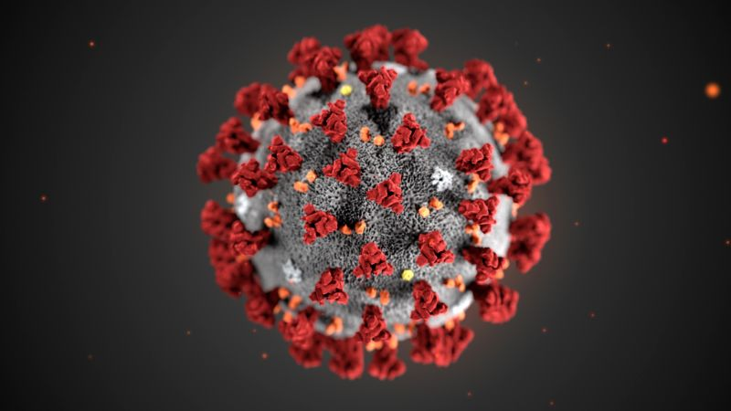
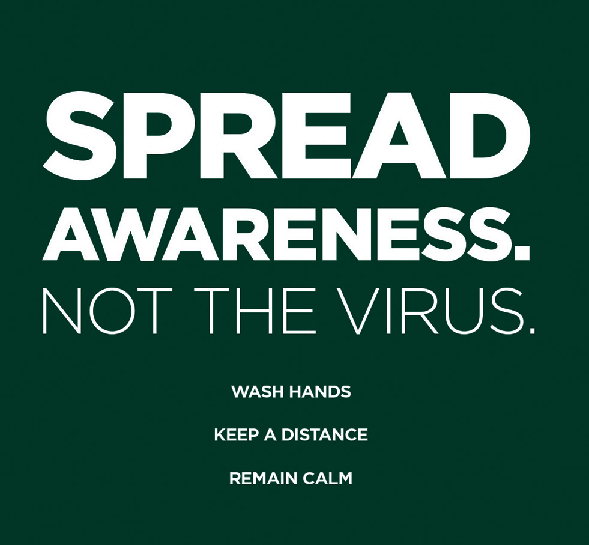
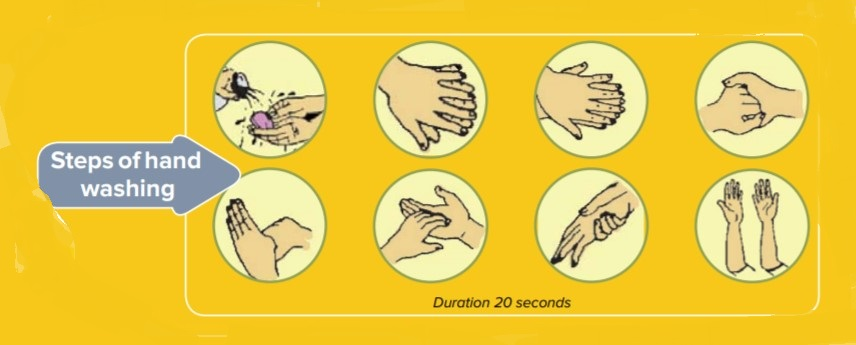
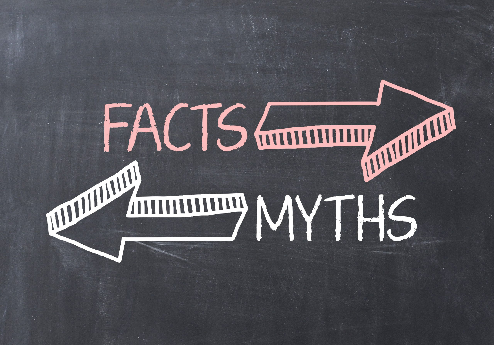
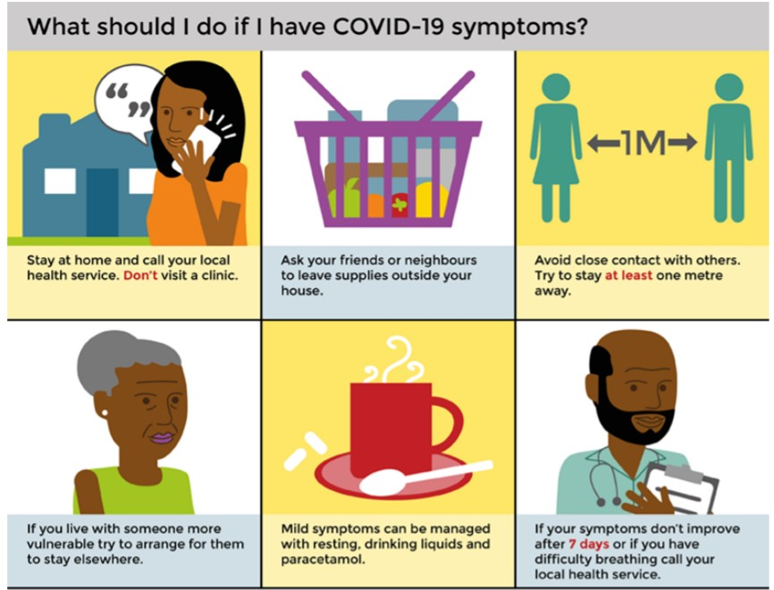

What is COVID-19 ?
COVID-19 is a disease caused by the Novel Corona Virus. Its symptoms (like the Flu) include :
- Fever
- Dry Cough
- Breathing Difficulty
- Sometimes , Aches, Pains, runny nose , nasal congestion
|

|
How does it spread ?
COVID-19 spreads mainly by droplets produced (Hover on the image on the right)
as a result of coughing or sneezing of a COVID-19
infected person.This can happen in 2 ways :
- Direct Contact: Standing within 1 meter of an infected person especially if they do not cover their mouth while sneezing or coughing
- Indirect Contact: The virus can survive on surfaces for few days. Touching these surfaces and then touching one's face
|

|
How lethal is COVID-19 ?
About 80% patients recover from COVID-19. One in 6 patients can become seriously ill and/or develop pneumonia , at worst.
However, this is mostly the cases in adult over the age of 60 years or those with medical problems like High Blood Problems , respiratory diseases/ asthma , cancer or diabetes.
|
How to avoid getting COVID-19 or spreading it ?
- Practice Social Distancing
- Avoid gatheringssuch as fairs, gatherings in religious places, social
functions etc.
- Maintain a safe distance of at least one metre between you and other people
when in public places,
especially if they are having symptoms such as cough,
fever etc. to avoid direct droplet contact.
- Stay at home as much as possible. More about it down below !
- Avoid physical contact like handshakes, hand holding or hugs.
- Avoid touching surfaces such as table tops, chairs, door handles etc.
......
- Practice Good Hygiene
- Wash your hands with soap and water or an alcohol based sanitizer
- After coming home from outside or meeting other people especially if
they are ill.
- After having touched your face, coughing or sneezing.
- Before preparing food, eating or feeding children.
- Before and after using toilet, cleaning etc.
- While coughing or sneezing cover your nose and mouth with a handkerchief.
Wash the handkerchief at least daily
- It is preferable to cough/sneeze into your bent elbow rather than your
palms.
- Do not Spit or shout in public places to avoid the spread of droplets.
- Do not touch your eyes, nose and mouth with unclean hands.
- Ensure that the surfaces and objects are regularly cleaned.
|

|
Myth VS Reality
Since the COIVD-19 is a new disease , many myths have come up. There is no known cure for the COVID-19. All rumors about an organic substance or Cow Urine or Cow Dung preventing COVID-19 are false.
| Myth |
Reality |
| 1. The corona virus can be transmitted
through mosquitoes. |
The corona virus CANNOTbe transmitted through mosquito
bites. |
| 2.Everyone should wear a mask. |
People who should wear a mask are:
- Those having symptom of fever, cough etc.
- Healthcare workers in facilities caring for ill people
- The assigned care taker of a home quarantined person
- Anyone stepping out of the house for any purpose
- Even those wearing masks should wash their hands
frequently
| |
3. Only people with symptoms of
COVID-19 can spread the disease. |
Even people with the COVID-19 infection but no symptoms
can spread the disease. |
Checkout these guidelines by MoFHW for more tips !
|

|
What to do if I show symptoms of COVID-19 ?
Although the guidelines vary from place to place, the general guidelines are :-
- The Incubation period of COVID-19 is 14 days, although people show symptoms usually within 5 to 6 days.
- If you show symptoms , DONT PAINC! . There is a chance that is not COVID-19
- However , you must seek medical care by calling health service
- Don't step out of the house or come in contact with any outsider
- Provide a genuine list of places you went to and person you met in the last 14 days to health officials
- DONT TRY ANY HOMEMADE REMEDY !
- For any COVID 19 related queries, call your State Helpline/Ministry of Health & Family
Welfare’s 24X7 helpline at 1075 or 011-23978046.
|

|